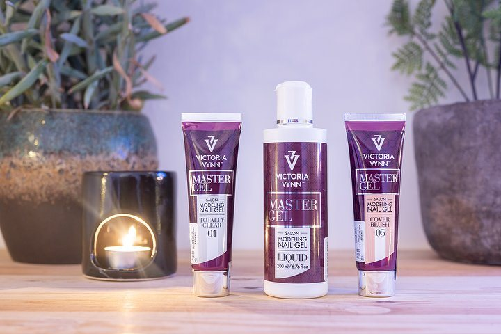

Nagels
Van bijwerken tot
een hele nieuwe set.
Manicure en pedicure, gellak, en verlenging met acryl of gel. De prijzen hieronder staan zo op haar eigen boekpagina.

Manicure & Pedicure
Express Manicure without colour Whether you like short, long, oval or straight nails, there is a reason why manicures are one of the most popular beauty treatments for women today. A professional manicure specialist takes care of your hands and nails to perfection. Do you also want a trendy color on your nails? With hundreds of colors to choose from, it adds the perfect finishing touch to any outfit. 30 min€28 Express Pedicure A pedicure is perfect for pampering your feet. Let the pedicure take care of your feet until they feel soft again and your toenails look well-groomed. Expect to leave with smooth skin, healthy manicured toenails and a pop of color with your favorite nail polish as the finishing touch. 30 min€28 Pedicure (without colour) A pedicure is perfect for pampering your feet. Let the pedicure take care of your feet until they feel soft again and your toenails look well-groomed. Expect to leave with smooth skin, healthy manicured toenails and a pop of color with your favorite nail polish as the finishing touch. 1 uur€40 Spa pedicure without colour A pedicure is perfect for pampering your feet. Let the pedicure take care of your feet until they feel soft again and your toenails look well-groomed. Expect to leave with smooth skin, healthy manicured toenails and a pop of color with your favorite nail polish as the finishing touch. 1 uur 15 min€60 Pedicure (with colour) Een pedicure is perfect om je voeten eens lekker te verwennen. Laat de pedicure je voeten verzorgen tot ze weer zacht aanvoelen en je teennagels er verzorgd uitzien. Verwacht te vertrekken met een gladde huid, gezonde verzorgde teennagels en een vleugje kleur met je favoriete nagellak als finishing touch. 1 uur 15 min€50 Express Manicure Of je nu van korte, lange, ovale of rechte nagels houdt, er is een reden waarom manicures tegenwoordig een van de meest populaire schoonheidsbehandelingen voor vrouwen zijn. Een professionele manicure specialiste verzorgt je handen en nagels tot in de perfectie.<br> Wil jij ook een trendy kleur op je nagels? Met honderden kleuren om uit te kiezen, geeft het de perfecte finishing touch aan elke outfit. 20 minShellac Manicures & Pedicures
Shellac Manicure Whether you like short, long, oval or straight nails, there is a reason why manicures are one of the most popular beauty treatments for women today. A professional manicure specialist takes care of your hands and nails to perfection. If you want a manicure that looks beautiful and lasts, the Gellak manicure is for you. With hundreds of colors to choose from, it adds the perfect finishing touch to any outfit. This treatment takes longer than a classic manicure, but since a Gellak manicure lasts up to two weeks, it's well worth the wait. 45 min Shellac Removal Whether you like short, long, oval or straight nails, there is a reason why manicures are one of the most popular beauty treatments for women today. A professional manicure specialist takes care of your hands and nails to perfection. If you want a manicure that looks beautiful and lasts, the Gellak manicure is for you. With hundreds of colors to choose from, it adds the perfect finishing touch to any outfit. This treatment takes longer than a classic manicure, but since a Gellak manicure lasts up to two weeks, it's well worth the wait. 20 min€15 Shellac Pedicure If you want a pedicure that looks beautiful and lasts, the Gellak Pedicure is for you. This treatment takes longer than a classic manicure, but since a Gellak pedicure lasts up to two weeks, it's well worth the wait. 45 min Shellac Spa Pedicure If you want a pedicure that looks beautiful and lasts, the Gellak Pedicure is for you. This treatment takes longer than a classic manicure, but since a Gellak pedicure lasts up to two weeks, it's well worth the wait. 1 uur 20 minNail Extensions
Nail Strengthening - BIAB Your natural nails are strengthened by applying a set of artificial nails. Your nails are not extended with tips. 1 uur€50 Acrylic Nail Extensions - New Set There is no better finishing touch than a set of perfectly finished acrylic or gel nails. These acrylic or gel artificial nails can be applied with or without extension of your own nails and in all imaginable colors. Decorate your nails with nail art, glitter, a French manicure or something else, because everything is possible. With a baby boom effect, your nails are painted with two colors. The difference with the French manicure is that with baby boom there is a gradual transition from pink to white. With a French manicure, your nails are painted in a soft pink color with an elegant, sleek and white edge on the nail tips. 1 uur 30 min Acrylic Nail Extensions - Infill If you have gel nails or acrylic nails, you really have to believe it after 3 to 4 weeks: your artificial nails grow with your natural nails and outgrowth occurs. So have your artificial nails filled in time to update the space between the cuticle and your artificial nail and to get your nails beautiful again. 1 uur 15 min€50 Gel Nails - New Set There is no better finishing touch than a set of perfectly finished acrylic or gel nails. These acrylic or gel artificial nails can be applied with or without extension of your own nails and in all imaginable colors. Decorate your nails with nail art, glitter, a French manicure or something else, because everything is possible. With a baby boom effect, your nails are painted with two colors. The difference with the French manicure is that with baby boom there is a gradual transition from pink to white. With a French manicure, your nails are painted in a soft pink color with an elegant, sleek and white edge on the nail tips. 1 uur 30 min Gel Nails - Infill There is no better finishing touch than a set of perfectly finished acrylic or gel nails. These acrylic or gel artificial nails can be applied with or without extension of your own nails and in all imaginable colors. Decorate your nails with nail art, glitter, a French manicure or something else, because everything is possible. With a baby boom effect, your nails are painted with two colors. The difference with the French manicure is that with baby boom there is a gradual transition from pink to white. With a French manicure, your nails are painted in a soft pink color with an elegant, sleek and white edge on the nail tips. 1 uur 15 min€50 Acrylic Nail Extensions - Removal Are your artificial nails damaged, outgrown or no longer as desired? Then you can have it professionally removed at the salon. During the treatment, the nails are carefully removed by filing. This is followed by a nurturing treatment or you can choose to have a new set of tanning applied. This way your nails look beautiful again. 30 min€20 Gel Nails - Removal Are your artificial nails damaged, outgrown or no longer as desired? Then you can have it professionally removed at the salon. During the treatment, the nails are carefully removed by filing. This is followed by a nurturing treatment or you can choose to have a new set of tanning applied. This way your nails look beautiful again. 30 min€18 BIAB Removal Are your artificial nails damaged, outgrown or no longer as desired? Then you can have it professionally removed at the salon. During the treatment, the nails are carefully removed by filing. This is followed by a nurturing treatment or you can choose to have a new set of tanning applied. This way your nails look beautiful again. 20 min€15 Nail Strengthening - BIAB with removal old set Je natuurlijke nagels worden verstevigd door het aanbrengen van een set kunstnagels. Je nagels worden hierbij niet verlengd met tips. 1 uur 30 min€60Ook 's avonds
Vier avonden per week tot 21:00. Zet in de aanvraag wanneer het schikt.
Afspraak aanvragen